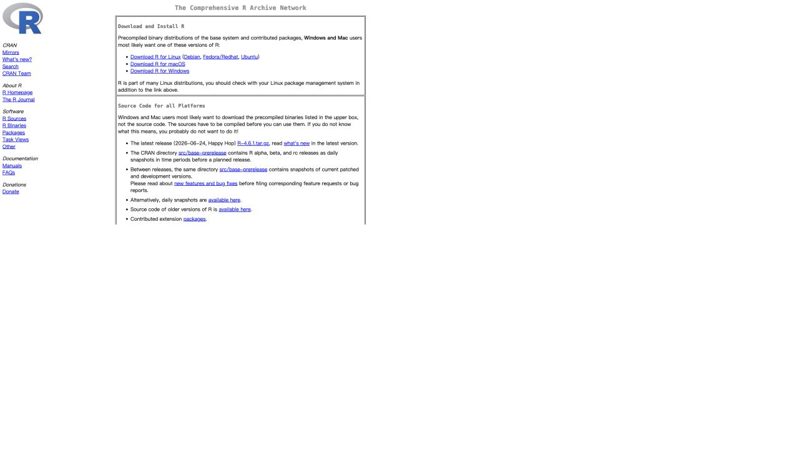
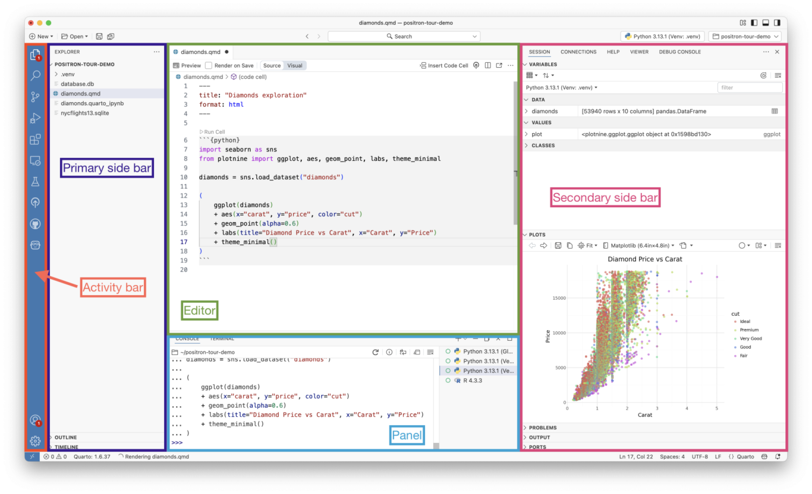
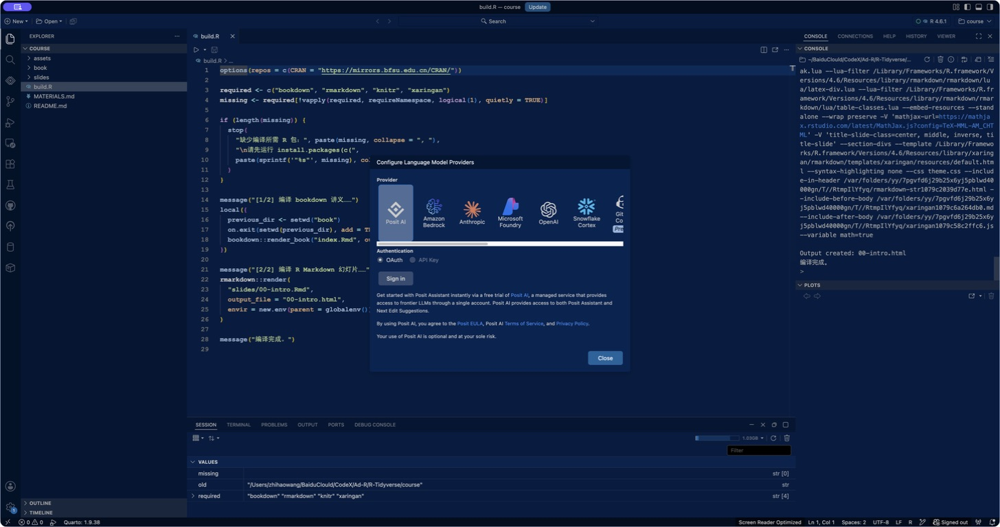
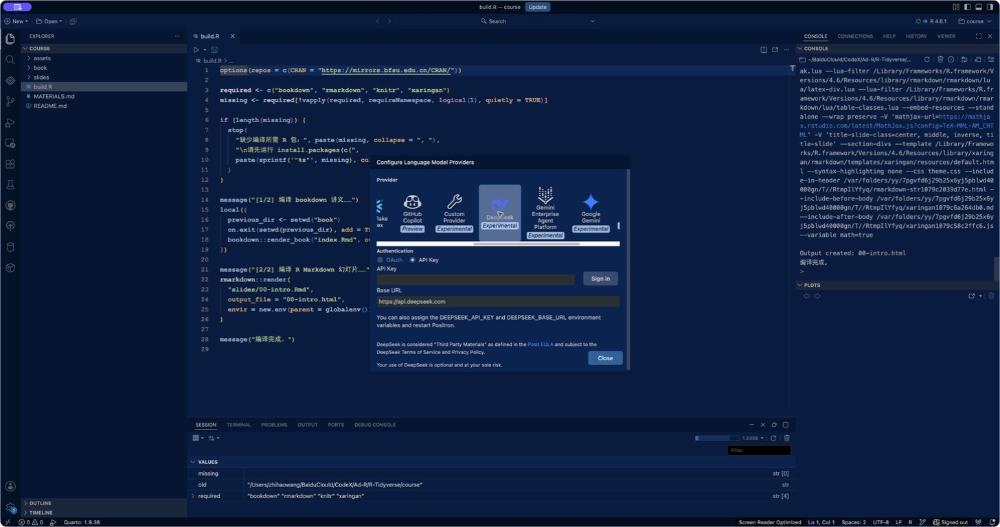
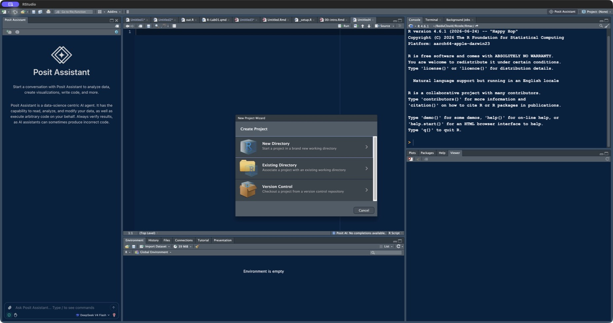
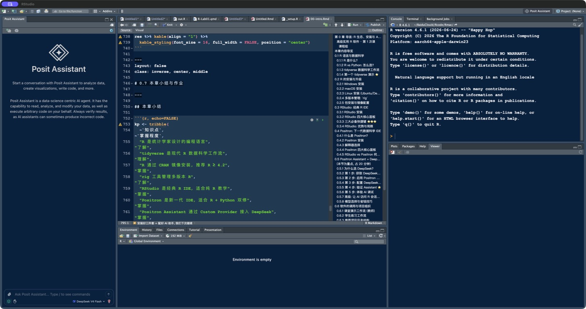

第 0 章 导语：从问题到代码
学习目标
完成本章后，你应该能够：
- 解释 R、RStudio 与 Positron 的关系，而不是把三者混为一谈；
- 按操作系统完成 R 与 IDE 的安装，并能验证安装是否成功；
- 用“分解问题—实例梳理—翻译与调试”组织一次编程任务；
- 识别 R 的面向对象、面向函数和向量化思想；
- 在 Positron 中安全地配置 Posit Assistant 与 DeepSeek，并验证其可用性；
- 判断 AI 生成的 R 代码是否值得信任。
本章定位：软件安装只是准备工作。真正的主线是建立“从问题到算法、从算法到代码”的思维链。
0.1 怎么学习编程语言
编程语言是人与计算机沟通的形式语言。它要求我们使用约定的数据结构、控制结构与函数，把“想做什么”准确地表达为计算机可以逐步执行的指令。
教材给出的关键方法可以概括为：
- 理解核心思想：R 既面向对象，也面向函数，并倡导向量化计算；
- 掌握基础语法：数据结构、分支与循环、函数、文件读写、可视化；
- 在真实问题中迁移：查帮助、做小实验、逐段调试、解释结果。
0.2 R 语言、数据科学与 tidyverse
数据科学把统计学、计算机科学与领域知识结合起来。典型工作流是：
导入 → 整理 → 变换 → 可视化 → 建模 → 沟通
R 是为统计计算、数据分析与图形表达设计的开源语言。它的优势包括：
- 统计方法与数据科学扩展包丰富；
- 图形语法成熟，适合探索与发表级制图；
- 交互分析与可复现报告可以在同一工作流中完成；
- 社区活跃，CRAN、Bioconductor 与 GitHub 构成丰富生态。
tidyverse 是一组共享设计理念、语法与数据结构的 R 包。它让导入、整理、变换、可视化和函数式迭代形成一致的表达方式。
0.2.1 tidyverse 的核心：管道流与泛函流
教材把 tidyverse 的特点概括为“整洁流、管道流、泛函流”。其中，最值得在导语阶段建立的不是某个函数名，而是两种组织计算的方式：
- 管道流：把数据依次交给多个函数，代码阅读顺序与分析步骤一致；
- 泛函流：把“要重复做的事”封装成函数，再把这个函数依次应用到一组输入。
0.2.1.1 管道符：让代码按数据流阅读
下面两段代码做同一件事：按气缸数分组，计算平均油耗。嵌套写法必须从内向外读；管道写法可以从上向下读。
Code
# 嵌套写法：从最里面开始读
dplyr::summarise(
dplyr::group_by(mtcars, cyl),
mean_mpg = mean(mpg)
)
# 原生管道：把左边结果交给右边第一个参数
mtcars |>
dplyr::group_by(cyl) |>
dplyr::summarise(mean_mpg = mean(mpg), .groups = "drop")可以把管道理解为一句完整的话：
从
mtcars开始，然后按cyl分组，然后计算每组的平均mpg。
tidyverse 早期广泛使用 magrittr 的 %>%；现代 R 课程优先使用 R 4.1 起提供的原生管道 |>。两者在常见数据处理中非常相似，但并不完全等价。阅读旧教材时要认识 %>%，自己写新代码时优先使用 |>。
管道使用原则：一行只完成一个清晰动作；当管道过长、需要反复回看，或中间结果值得命名和检查时，就拆开并保存中间对象。
0.2.1.2 泛函式编程：函数也是可以传递的数据
“泛函”是接收函数作为输入，或返回函数作为输出的函数。purrr::map_*() 家族接收“一组输入 + 一个函数”，完成迭代并约束输出类型。
Code
area_circle <- function(r) pi * r^2
radii <- c(2, 4, 7)
purrr::map_dbl(radii, area_circle)
#> [1] 12.56637 50.26548 153.93804这里的思维顺序是：
- 先把“一个输入怎样处理”写成
area_circle()； - 再用
map_dbl()把它应用到每个半径； - 函数名后缀
_dbl明确承诺返回双精度数值向量。
常用映射如下：
| 函数 | 期望输出 | 典型用途 |
|---|---|---|
map() |
列表 | 每次结果结构复杂或不一致 |
map_dbl() |
数值向量 | 批量计算统计量 |
map_chr() |
字符向量 | 批量生成标签或文件名 |
map_lgl() |
逻辑向量 | 批量做条件判断 |
map2() / pmap() |
列表 | 同时迭代两组或多组参数 |
0.3 R、RStudio 与 Positron：三层关系
关键关系：先安装 R，再由 RStudio 或 Positron 调用 R。IDE 不是 R 本身；删除 IDE 不等于删除 R，安装两个 IDE 也不会复制两套 R。
| 维度 | R | RStudio | Positron |
|---|---|---|---|
| 角色 | 语言与运行时 | 经典 R IDE | R/Python 数据科学 IDE |
| 是否执行 R 代码 | 是 | 调用 R | 调用 R |
| 强项 | 统计计算、包生态 | 纯 R 教学、R Project、成熟工作流 | R/Python 混合、数据浏览、现代编辑器、AI |
| 更适合 | 所有 R 用户的底座 | 初学者与以 R 为主的分析 | 多语言项目与现代数据科学工作流 |
课程建议：两者都认识，课堂主环境使用 Positron；遇到教材中的 RStudio 截图时，能把相同功能映射到 Positron。
0.4 安装 R
安装顺序：R → IDE → R 包 → 项目验证。

Figure 0.1: CRAN 官方首页：先按操作系统选择 R 安装入口（网页截图，2026-08）
图中最重要的是顶部三个入口：Download R for Linux、Download R for macOS 和 Download R for Windows。CRAN 是 R 本体与扩展包的官方分发网络；RStudio 与 Positron 的下载不在这里。
0.4.1 Windows
- 打开 CRAN，选择 Download R for Windows；
- 进入
base，下载当前稳定版安装程序； - 使用默认的 64 位安装选项；建议使用无中文、无特殊字符的项目路径；
- 打开 R，运行
R.version.string验证。
如需编译含 C/C++/Fortran 的 R 包，再按当前 R 版本安装匹配的 Rtools。普通课程初期不必先安装 Rtools。
0.4.2 macOS
- 在 CRAN 选择 Download R for macOS；
- 根据芯片选择 Apple Silicon (
arm64) 或 Intel (x86_64) 安装包； - 完成
.pkg安装后启动 R，运行R.version.string。
可在“关于本机”查看芯片类型。不要把 Intel 与 Apple Silicon 安装包混用。
0.5 安装与认识 RStudio
- 先确认 R 已安装；
- 从 Posit 下载页 获取 RStudio Desktop；
- 按系统安装程序完成安装；
- 启动 RStudio，在 Console 中运行
R.version.string。

Figure 0.2: RStudio 当前界面示例（窗格可在 Tools → Global Options → Pane Layout 中调整）
界面功能映射：
- Source：编写并保存
.R、.Rmd、.qmd； - Console：交互执行短命令，查看错误与输出；
- Environment / History：查看会话对象与命令历史；
- Output：Files、Plots、Packages、Help、Viewer；
- Sidebar / Posit Assistant：新版可放置辅助工具，具体能力取决于版本与账户配置。
RStudio 的优势是 R 教学路径成熟、窗格概念清晰、R Project 与包开发支持稳定。其局限是多语言与现代编辑器扩展体验不如 Positron 统一。
上图来自 RStudio User Guide: Get Started，官方已直接标出四个核心窗格。初学阶段先掌握 Source → Console → Environment → Output 的信息流，不必一次记住所有标签页。
0.6 安装与认识 Positron
- 从 Positron 官方安装页 下载对应系统版本；
- 按系统常规方式安装并启动；
- 打开课程文件夹；
- 点击右上角 Start Session，选择已安装的 R；
- 在 Console 执行
R.version.string与getwd()验证解释器和项目路径。

Figure 0.3: Positron 当前界面示例；打开项目并启动 R 会话后，各数据科学窗格会显示内容
主要区域：
- Activity Bar / Explorer：项目文件、搜索、版本控制、扩展；
- Editor：R 脚本、R Markdown、Quarto 与 Notebook；
- Console / Terminal / Problems / Output：交互会话、系统终端与诊断；
- Variables / Data Explorer：查看对象、筛选和检查表格数据；
- Plots / Viewer / Help / Connections：图形、HTML 结果、帮助与连接；
- Posit Assistant：结合当前文件、会话对象、图形与控制台历史辅助分析。
Positron 的优势是 R 与 Python 的统一体验、现代代码编辑能力、解释器管理、数据浏览和 AI 上下文；对于只使用 R 的入门者，按钮与命令入口较多，需要先掌握最小工作流。
上图来自 Posit 官方文章 A quick tour of Positron。与 RStudio 对照时，不要强求窗格位置一一相同，而要找功能：编辑器对应 Source，Console 对应 Console，Variables 对应 Environment，Plots/Viewer/Help 对应 Output。
0.7 配置 Posit Assistant + DeepSeek
版本提示（2026-08）：Positron 2026.07 起默认提供 Posit Assistant，它取代旧称 Positron Assistant。新版已经提供原生的 DeepSeek (Experimental) 提供商；旧版教程中的 Custom Provider 仍可作为兼容方案。
0.7.1 准备 API Key
- 登录 DeepSeek 开放平台；
- 在 API Keys 页面创建密钥并充值或确认额度；
- 创建后立即存入密码管理器。不要截图、粘贴到讲义、写入 R 脚本或提交到 Git。
0.7.2 推荐：使用 Positron 原生 DeepSeek 提供商
- 在 Positron 按
Ctrl/⌘ + Shift + P打开命令面板； - 运行 Authentication: Configure Language Model Providers；
- 选择 DeepSeek (Experimental)；
- 按提示粘贴 API Key；
- 运行 View: Show Posit Assistant 打开侧栏；
- 在模型选择器中选
deepseek-v4-flash或deepseek-v4-pro； - 发送测试问题，例如：“解释当前 R 文件中
summarise()的输入与输出，不要修改文件。”

Figure 0.4: Positron 的 Language Model Providers 列表；DeepSeek 已作为 Experimental 提供商出现（本机截图，2026-08）

Figure 0.5: 选择 DeepSeek 后的认证入口：只在安全输入框粘贴密钥，Base URL 默认为 https://api.deepseek.com（截图中未输入任何真实密钥）
也可在启动 Positron 前设置系统环境变量 DEEPSEEK_API_KEY。不要把真实密钥写进项目的 .Renviron；若教学演示必须使用环境文件，应放到用户级文件并确保不被同步或提交。
0.7.3 兼容旧版：Custom Provider
旧版 Positron 若没有 DeepSeek 选项：
- 选择 Custom Provider (Experimental)；
- Base URL 填写
https://api.deepseek.com； - 输入 DeepSeek API Key；
- 如模型列表无法自动加载，在用户
settings.json中配置：
{
"positron.assistant.models.overrides.customProvider": [
{"name": "DeepSeek V4 Flash", "identifier": "deepseek-v4-flash"},
{"name": "DeepSeek V4 Pro", "identifier": "deepseek-v4-pro"}
]
}截至 2026-08，旧模型名 deepseek-chat 与 deepseek-reasoner 已进入弃用迁移阶段，课堂示例使用 V4 模型名。
0.8 最小项目工作流
0.8.1 第一步：用 RStudio 图形界面建立项目边界
在 RStudio 点击右上角 Project: (None) 或工具栏的项目按钮，选择 New Project。项目向导提供三条路径：

Figure 0.6: RStudio New Project Wizard：新目录、现有目录、版本控制三种入口（本机截图，2026-08）
- New Directory：课程新作业最常用；RStudio 新建文件夹并创建
.Rproj； - Existing Directory：已有数据和脚本时使用；把现有文件夹变成项目；
- Version Control：从 Git 仓库开始，适合团队协作与版本管理。
创建或打开项目后，右上角会显示项目名，Files 窗格以项目根目录为起点，Console 的工作目录也随项目切换。此时 getwd() 应指向项目目录。
0.8.2 第二步：用四窗格完成一次可复现循环

Figure 0.7: RStudio 图形界面中的最小循环：Source 编写 → Console 运行 → Environment/Plots 检查 → Files 保存
在界面上按以下顺序操作：
- 在 Files 新建
R/、analysis/、output/等目录； - 在 Source 新建并保存脚本，不把长期代码只留在 Console；
- 用
Ctrl/⌘ + Enter将当前行或选区发送到 Console； - 在 Environment 检查对象名、类型与大小，在 Plots/Viewer 检查图形或 HTML；
- 保存源文件，重启 R 后从头运行；只有完整成功才算可复现。
0.9 本章小结
- R 是计算引擎；RStudio 与 Positron 是调用 R 的开发环境；
- RStudio 强在成熟、聚焦的 R 工作流，Positron 强在 R/Python、现代编辑和 AI 数据科学体验；
- 学编程要把问题拆解为算法步骤，再逐片段翻译与调试；
- 函数、对象与向量化是理解 R 的三把钥匙；
- Posit Assistant 可以接入 DeepSeek，但密钥安全、数据边界与结果验证不能交给 AI。
0.10 课后练习
- 完成 R、RStudio、Positron 安装，并提交三条验证结果：
R.version.string、getwd()、sessionInfo()； - 用自己的话画出 R—IDE—R 包三层关系图；
- 把“计算一组成绩的优秀率”分解为不少于四个算法步骤，再翻译成 R 代码；
- 使用 Posit Assistant 请求代码解释，记录一处你发现并修正的 AI 问题；
- 思考：什么时候应该关闭 Assistant 或不给它读取当前项目？
本章来源与延伸阅读
- 张敬信：《R 语言编程：基于 tidyverse》，导语与第 1.1 节。
- The R Project / CRAN
- RStudio User Guide: Get Started
- Install Positron
- Posit Assistant: Get started
- Posit Assistant providers
- DeepSeek API: Your First API Call